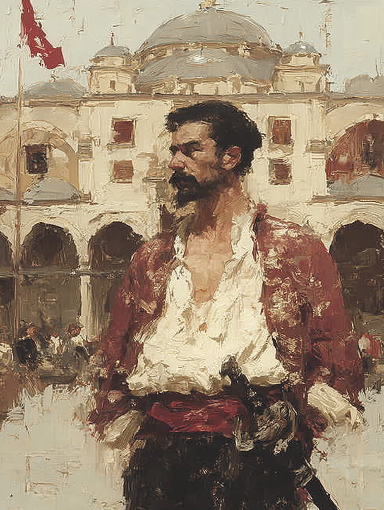

Kemal "The Sentinel" Balik
Çorbacı of the Old Corps · Janissary

Albanian · Aged Forty-Five
On the Subject
A relic of a bygone era, Kemal serves as a living reminder of the Janissary Corps. Taken as a boy from Albanian Christian lands and trained in Constantinople, he served the Sultan through three campaigns and watched his hearth dissolved at imperial decree in 1826 — most of his brothers killed, the survivors banished or scattered. He came back. He always comes back.
He now works as a bodyguard for high-profile officials, the polished outer coat and old corps insignia worn openly because no one in this city has dared tell him to remove them. His loyalty is to the honor of his fallen comrades; the institution may be gone, but the man wearing its uniform is not.
Faculties & Saving Throws
Base array 17, 16, 14, 12, 10, 10; Human +1 to each
Bearing in the Field
Skills
| Skill | Bonus | Source |
|---|---|---|
| Athletics | +6 | Soldier |
| History | +2 | Fighter |
| Insight | +3 | Fighter |
| Intimidation | +2 | Soldier |
| Perception | +3 | Human |
Class Features
+2 to attack rolls with ranged weapons. Stacks with Janissary's Master of Arms (+2 firearms) for a combined +4 attack bonus with firearms before proficiency.
Regain 1d10 + 3 HP.
Take one additional action on his turn.
When taking the Attack action with any weapon, he can make an Unarmed Attack as a bonus action — even with both hands occupied. On hit: 1d6 + 4 bludgeoning; target makes a Strength save vs DC 14. On a failure, frightened until end of his next turn OR proned (his choice).
Otherwise can still use the bonus action to slap without applying a condition.
When making a weapon attack (Unarmed Strikes do not count), once per turn, apply one effect from the damage type used. Target save DC 14.
| Damage | Effect |
|---|---|
| Bludgeoning Str save |
Push — 10 ft push (proned on critical hit or max damage roll). Shake the Ground — on miss, +1d4 to next attack roll. |
| Piercing Con save |
Slow — −10 ft speed (does not stack). Internal Wound — 1d4 damage per turn for 1 minute; ends with an action to tend, magical healing, or DC 10 Medicine check. |
| Slashing Dex save |
Distraction — disadvantage on its next attack roll until start of his next turn. Off-Balance — next attack roll against the creature has advantage. |
Feat
- Ignores the loading quality of firearms with which he is proficient.
- Being within 5 ft of a hostile creature does not impose disadvantage on his ranged attack rolls.
- When he takes the Attack action and attacks with a one-handed weapon, he can use a bonus action to attack with a one-handed firearm he is holding.
Background — Soldier
Kemal held the rank of Çorbacı — commander of a janissary regiment, "soup-cook" in literal translation. A senior officer rank.
Though the Janissary corps was officially dissolved in 1826, his rank still commands deference among aging veterans, in former regimental quarters, and from soldiers who served before the dissolution. Camps of military veterans, certain coffee-houses near old barracks, and old comrades will recognize his authority and provide modest aid.
Gaming set — knucklebones (Soldier); vehicles (land) (Soldier); firearms (Janissary).
Equipment
- Yatagan — longsword stats: 1d8 slashing, versatile 1d10; +6 to hit / 1d8+4 one-handed, 1d10+4 two-handed; heirloom of the Old Guard, non-magical at L3 but personally significant
- Tüfeq — martial firearm; 1d8 piercing, range 350/700, ammunition, gunpowder, reload, heavy, two-handed; +8 to hit (PB 2 + Dex 2 + Archery 2 + Master of Arms 2). With Firearm Expert: loading negated. Gunpowder property: on a max damage die roll, reroll and add to damage
- Handgun — martial firearm; 1d6 piercing, range 200/500, ammunition, light, finesse, gunpowder, reload; +8 to hit / 1d6+2. Sidearm; can bonus-action fire after a one-handed Yatagan attack (Firearm Expert)
- Hanchar — 1d4 piercing, finesse, light, range, thrown 20/60; +6 to hit / 1d4+4; curved utility dagger, can be thrown
- 20 Tüfeq cartridges, 20 Handgun cartridges
- Mailed coat (zırh) — chain mail reskinned; AC 16, no Dex bonus, Str 13 requirement (Kemal: Str 18 ✓), stealth disadvantage. Worn over a quilted gambeson under a janissary outer coat with old regimental insignia
1/day reaction: when struck, choose any one damage type; gain resistance against that damage type for the triggering attack and until the start of his next turn. Recharges at dawn.
+2 AC already factored into AC 18.
- Russian officer's belt buckle — a trophy from the 1828–29 war; kept on a leather thong
- Bone dice and chess set — Soldier
- Insignia of rank — a brass çorbacı badge, polished
- Common clothes; janissary outer coat — worn openly despite the official ban
- Prayer book — small, leather-bound
- Field tent and bedroll — kept at his lodgings; available if expedition requires
Personality
I do not raise my voice and I do not waste my words. When I speak, men older than this city listen.
The corps is gone. The oath is not. What I swore at fourteen years old binds me still.
I lived through the dissolution in '26. My brothers did not. I carry their names, and I will not allow them to be forgotten while I draw breath.
I do not trust modern Ottoman authority. The state killed my hearth. I will protect the people of this city, but I will not bow to the men currently running it.
Connections
- Long-time ally of Hassan Al-Kabir, having fought together in street skirmishes.
- Saved Father Leonidas during a conflict in the Janissary quarter.
His military discipline and leadership skills make him a valuable addition to any team.